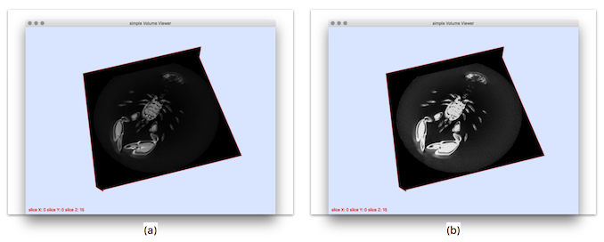

Applies a linear rescaling of the image intensity from an input intensity interval [InMin, InMax] into an output interval [OutMin, OutMax].
Usage: volIntensityScale –input <volFileName> –output <volOutputFileName> (both files can be independently in vol, pgm3D, p3d format)
Allowed options are :
-h [ --help ] display this message.
-i [ --input ] arg Input vol file.
-o [ --output ] arg volumetric output file (.vol, .pgm, .pgm3d,
.longvol)
-m [ --inMin ] arg (=0) the min value of the input image.
-M [ --inMax ] arg (=255) the max value of the input image.
--outMin arg (=0) the min value of the output image.
--outMax arg (=255) the max value of the output image.
Example:
In this example, we select all intensities included in [0,100] and scale them into [0, 255]:
$ volIntensityScale -i ${
DGtal}/examples/samples/lobster.vol --inMin 0 --inMax 100 -o lobster0-100.vol
You should obtain such a result:

(a) source image, (b) intensity scaled image.
- See also
- volIntensityScale.cpp